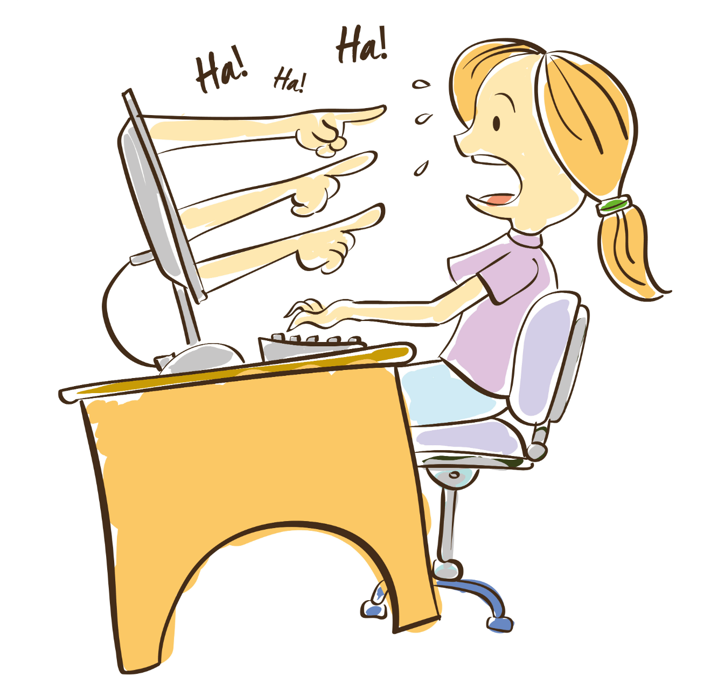

What is cyberbullying?
‘The use of electronic communication to bully a person, typically by sending messages of an intimidating or threatening nature.’
Cyberbullying is a form of bullying or harassment using electronic devices. Cyberbullying is also known as online bullying. It can occur through text, calls, social media, gaming, etc. It has become very common among teenagers as technology continues to improve day by day.

Differences of Bullying and Cyberbullying:
Cyberbullying is a type of bullying but it can be harder to deal with. This type of bullying occurs digitally which means it has a high chance of spreading throughout the internet. It would have a long-lasting effect that would affect the person’s wellbeing. An example of this could be social media posts. They can be quickly shared through the internet, stored secretly in certain locations and even be left as a permanent record.
Effects of cyberbullying:
Cyberbullying can have 4 major effects on a person. Emotional, Mental, Physical and Behavioural. Emotional effects could result in Humiliation, Isolation, Anger, etc. This can change a person’s emotional state and give them low self-confidence. Mental effects can give a person depression, social anxiety and low self-esteem. These changes can also result in low self-confidence which can create stress and loneliness. Physical effects from cyberbullying can affect sleep and eating habits. This would be unhealthy for the body which can result in not getting enough sleep and starvation. Lastly, Behavioural effects could be skipping school, using drugs or even carrying a weapon. This is because the person would be scared of their personal space so they will become more cautious of their surroundings. Cyberbullying overall can have negative effects on a person which in the worst-case scenario, can lead to suicide.